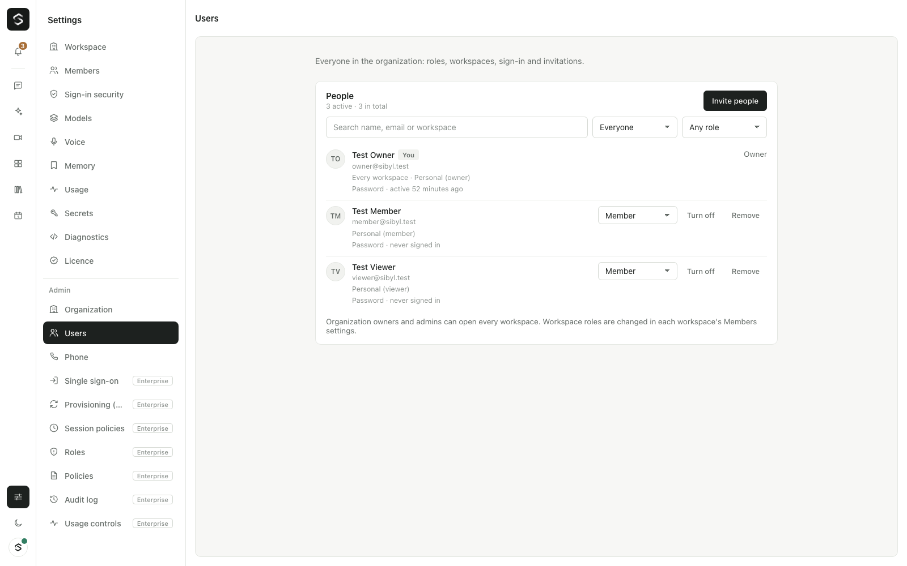

Admin: organization and users
Admin (/admin/<section>) is for organization owners and admins. It is part
of Settings: the Admin sections are listed under an Admin heading in the
Settings list (see Finding your way around). Two of its
sections are part of the free edition: Organization and Users. The others
(roles, policies, audit log, single sign-on, SCIM, session policies, usage
controls) need an Agent Serve licence; see Enterprise (Agent Serve).

Organization roles are separate from workspace roles. An organization owner or admin can open every workspace and use Admin. An organization member or viewer only sees the workspaces they were invited to, with the role they have there (Settings → Members).
Organization
Admin → Organization has four parts.
Organization
- Name. Shown in the workspace switcher and in invitation emails. Leave it empty to show nothing.
- New people also join. Everyone who accepts an invitation is also added to this workspace. Choose "Only the workspace they're invited to" to turn this off (the default).
- Default role. The role preselected when someone invites people, and the role new people get in the workspace above. It can't be Owner.
With Agent Serve, people created by single sign-on or SCIM land in the same workspace with the same role, also after you change them here, until you choose something else under "New people and groups" in Admin → Single sign-on.
Organization budget. Daily and monthly spending caps for everyone. They can't
be higher than SIBYL_BUDGET_DAILY_USD / SIBYL_BUDGET_MONTHLY_USD on the server;
with nothing set here, those values apply. See
Models and costs.
Workspaces. Every workspace with how many people can open it (its members plus the organization's owners and admins). You can create and rename workspaces here. Organization owners can delete any workspace except the default one. Deleting a workspace removes everyone's access to it.
Licence. The edition, who it is licensed to, how many seats are in use and when the licence ends. "Licence details" opens Settings → Licence.
Users
Admin → Users lists everyone in the organization:
- name and email;
- organization role;
- the workspaces they belong to, with their role in each;
- when they were last active (sign-in, or using Sibyl; updated about once an hour);
- how they sign in: password, password with two-step verification, or — with Agent Serve single sign-on — the identity provider;
- whether the account is turned off.
Search by name, email or workspace, and filter by status or role. Pending invitations in every workspace are listed below the people.
What owners and admins can do:
| Action | Rules |
|---|---|
| Change someone's organization role | You can't give a role above your own, so admins can't make owners. You can't change someone above you. The organization always keeps at least one active owner. |
| Turn an account off | They are signed out everywhere at once (open tabs close their connection) and can't sign in. Their workspaces and roles stay. You can't turn off yourself or the last owner. |
| Turn an account on | They can sign in again with everything they had. |
| Remove from the organization | They lose every workspace and are signed out. They disappear from the list. To bring them back, invite them again (or, with Agent Serve, let single sign-on or SCIM create them again): they start fresh with only the new access. |
| Invite people | People can accept with a password, or with Google or Microsoft when the server has those sign-in apps; the provider's verified address must be the invited one. |
| Invite people | Pick the workspace and role. The role starts at the organization's default. |
| Resend an invitation | Makes a new link (valid for 7 days) and emails it when email is set up. The old link stops working. |
| Revoke an invitation | The link stops working. |
Workspace roles are changed in each workspace's Settings → Members.
With Agent Serve SCIM provisioning, accounts your identity provider manages show Managed by your identity provider. Turn them off, on or remove them in the identity provider; Sibyl does not allow it here. Their organization role can still be changed in Sibyl.
Every change here is written to the audit log (Agent Serve): organization settings, budgets, organization roles, accounts turned off and on, removals, workspace changes and invitations. Changes reach people's open sessions right away: their role, workspace list and the organization name update without reloading the page.
HTTP API
All routes need org.settings (organization owner or admin).
| Route | Body | Answer |
|---|---|---|
GET /api/admin/org |
settings, workspaces with member counts, licence summary | |
PATCH /api/admin/org |
{ name?, defaultWorkspaceId? (null: none), defaultRole?, budget?: { dailyUsd?, monthlyUsd? } } (null clears a cap) |
same as GET |
GET /api/admin/users |
{ users, invites } |
|
PATCH /api/admin/users/:id |
{ orgRole?, active? } |
{ user } |
DELETE /api/admin/users/:id |
{ ok } |
|
POST /api/admin/invites/:id/resend |
{ invite, url, emailed } |
|
DELETE /api/admin/invites/:id |
{ ok } |
Workspaces use the existing routes: POST /api/workspaces,
PATCH /api/workspaces/:id ({ name?, icon?, instructions? } needs
workspace.settings; { budget } needs budgets.manage) and
DELETE /api/workspaces/:id.
Errors come back as { error, message }: for example last_owner (409),
self (409), managed_by_idp (409), budget_above_limit (400) and
forbidden (403).